””
ロボットがワークを
安定して掴めない
トレイ内で部品の位置や向きがズレると、ピックアップミスや設備停止の原因になります。自動機の動きに合わせた保持設計が必要です。
生産技術・設備担当の方へ
01省人化
02品質安定
03作業時間短縮
自動化トレイで実現
ものづくり ワールド東京 2026
2026.7.1 wed - 7.3 fri / 東京ビックサイト
ブース番号：決定次第記載
トレイ内で部品の位置や向きがズレると、ピックアップミスや設備停止の原因になります。自動機の動きに合わせた保持設計が必要です。
生産技術・設備担当の方へ
ワークの形状、接触して良い部分、段積み条件、材質指定など、現場ごとに必要な条件は異なります。既製品では対応しきれないケースがあります。
購買・資材担当の方へ
工程間搬送や保管時に部品が動くと、キズ・変形・向き違いなどのリスクにつながります。部品を決まった姿勢で保つ設計が重要です。
品質・工程管理者の方へ
部品の形状に合わせた受け部や仕切りを設計し、搬送・保管時のキズ、変形、破損リスクを抑えます。
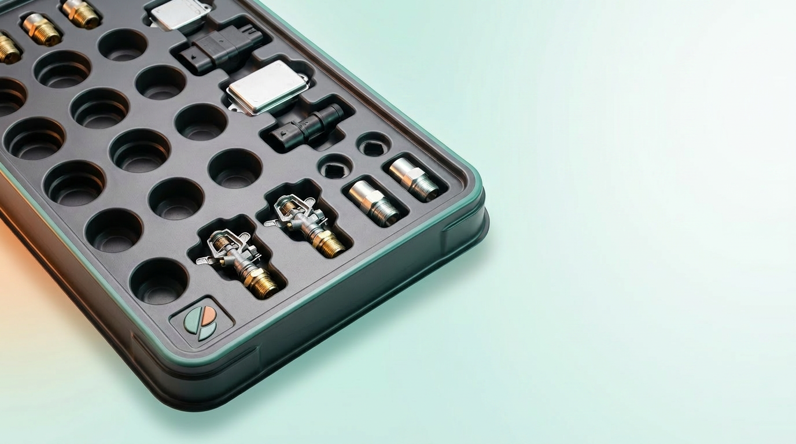
部品の向き・数量・種類がひと目でわかるよう、整列性や視認性を考慮して設計します。
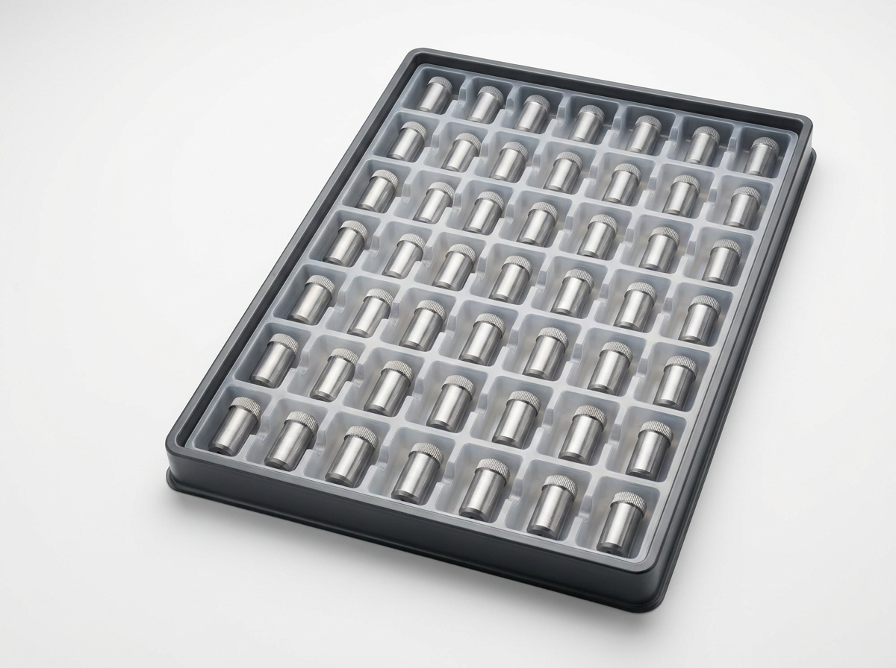
材質、強度、段積み、静電性能、使用環境など、現場ごとの条件に合わせて専用設計します。
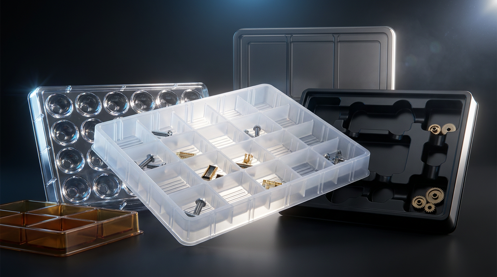
工業用トレイのみならず、
自動化ラインに求められる
整列・識別・搬送を最適化。
ワークの配置ずれや向き違いを抑え、
設備停止やピックアップミスの低減に貢献します。
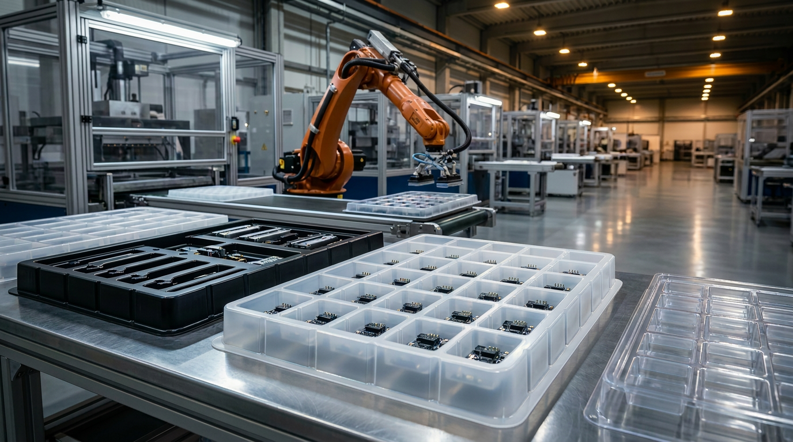
ワーク形状や自動機の
動きに合わせたトレイを設計
材料選定と一貫対応で、
品質とコストを最適化
営業が技術的な内容
まで理解して、相談に対応
豊富な設備で量産から納品
までスピーディーに対応
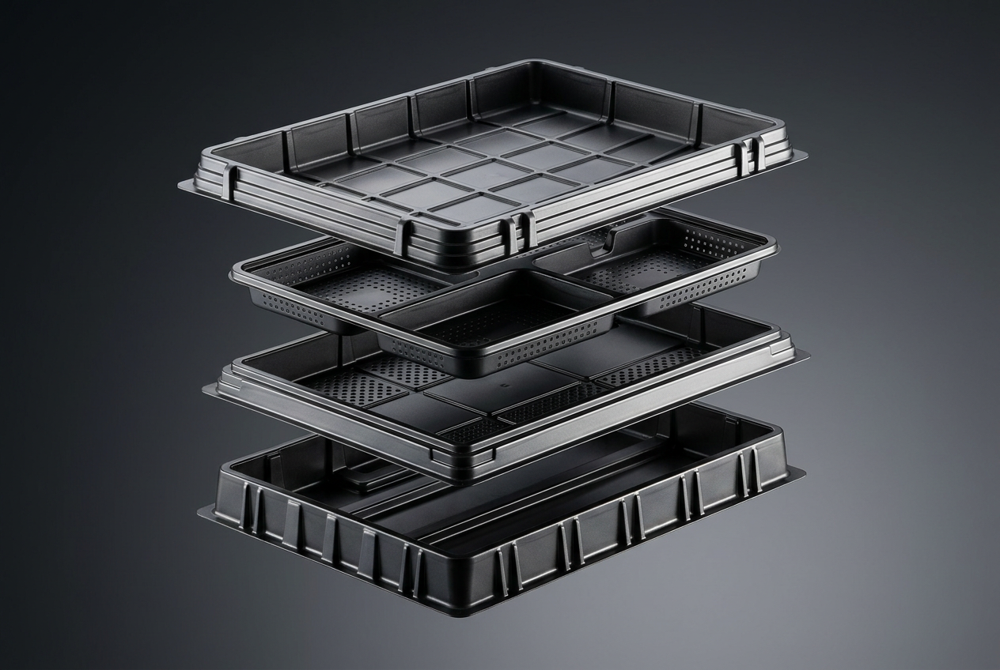
ワークの接触可否、自動機の動き、材質・段積み条件を確認します。
ワークの3Dデータや要求仕様をもとに、トレイ形状を図面化します。
2D・3Dデータを確認いただき、量産前の仕様をすり合わせます。
1マスのみ試作しワークの収まりや形状を確認します。
試作評価後、承認をいただいて量産型を製作します。
量産品を生産し、品質を確認したうえで納品します。
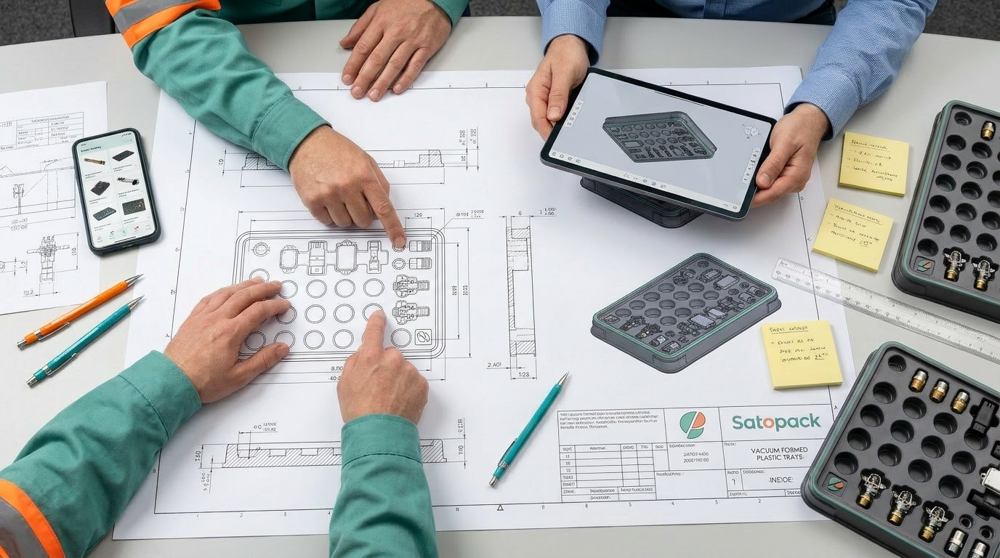
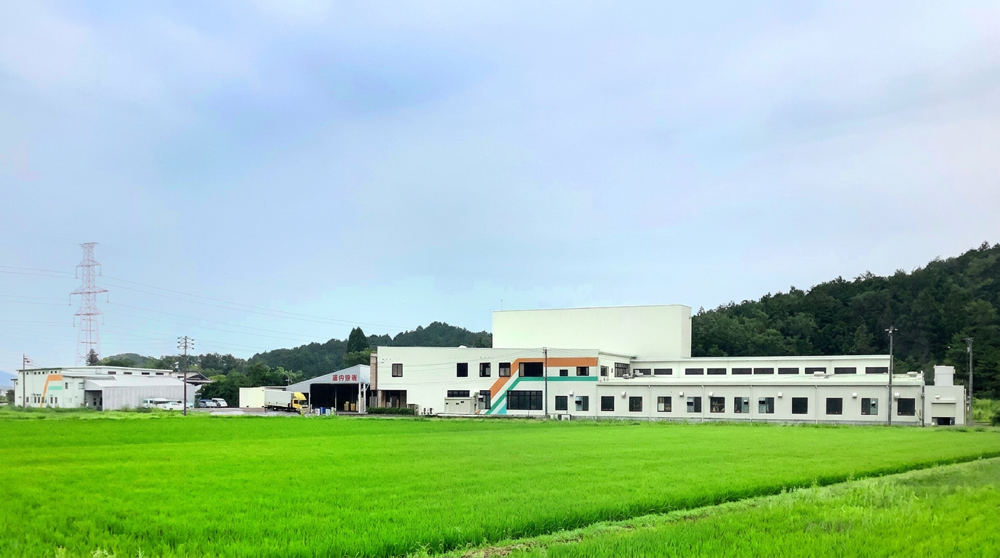
ものづくり ワールド東京2026でも
ご相談いただけます。
ブース番号：決定次第掲載
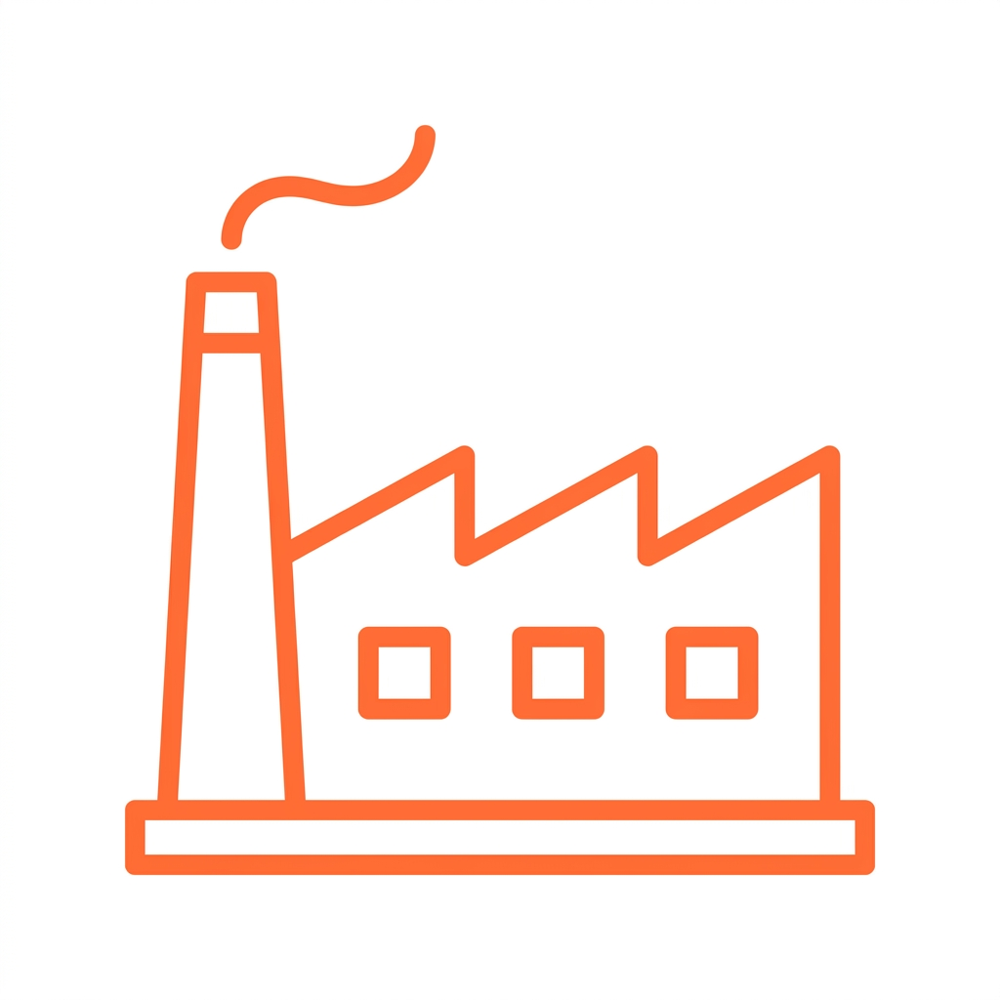
56年
創業1970年の実績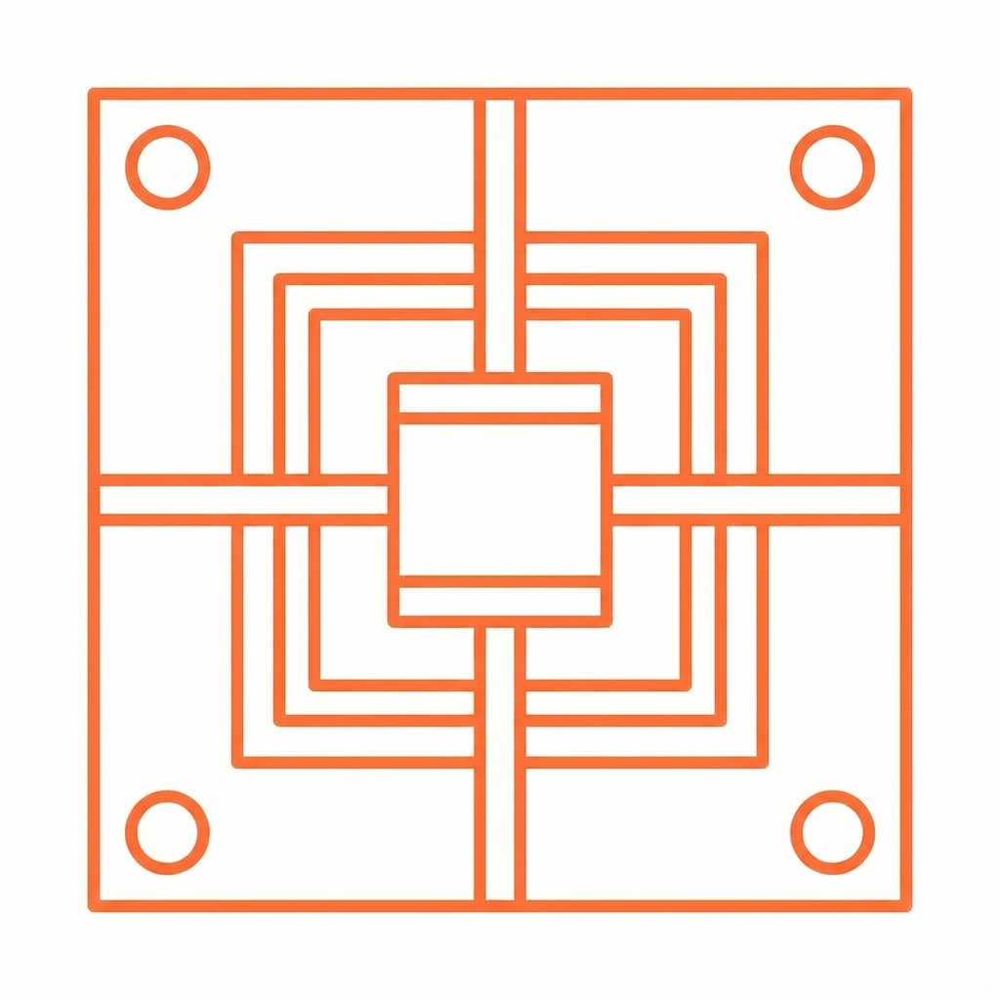
400型以上
年間製造金型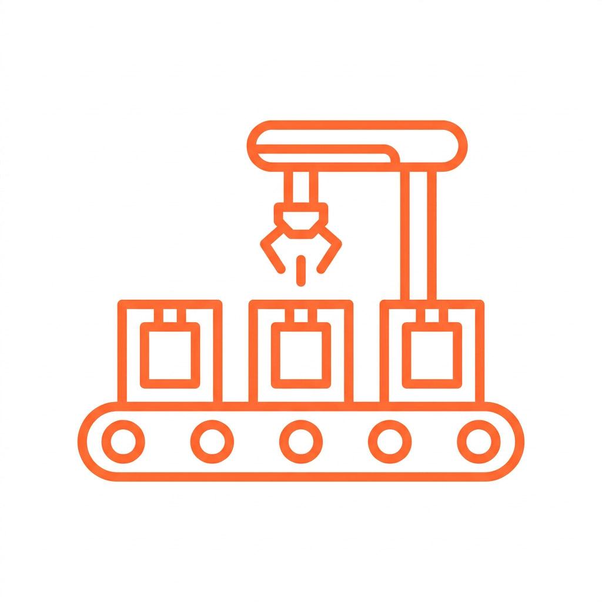
1億枚
年間生産能力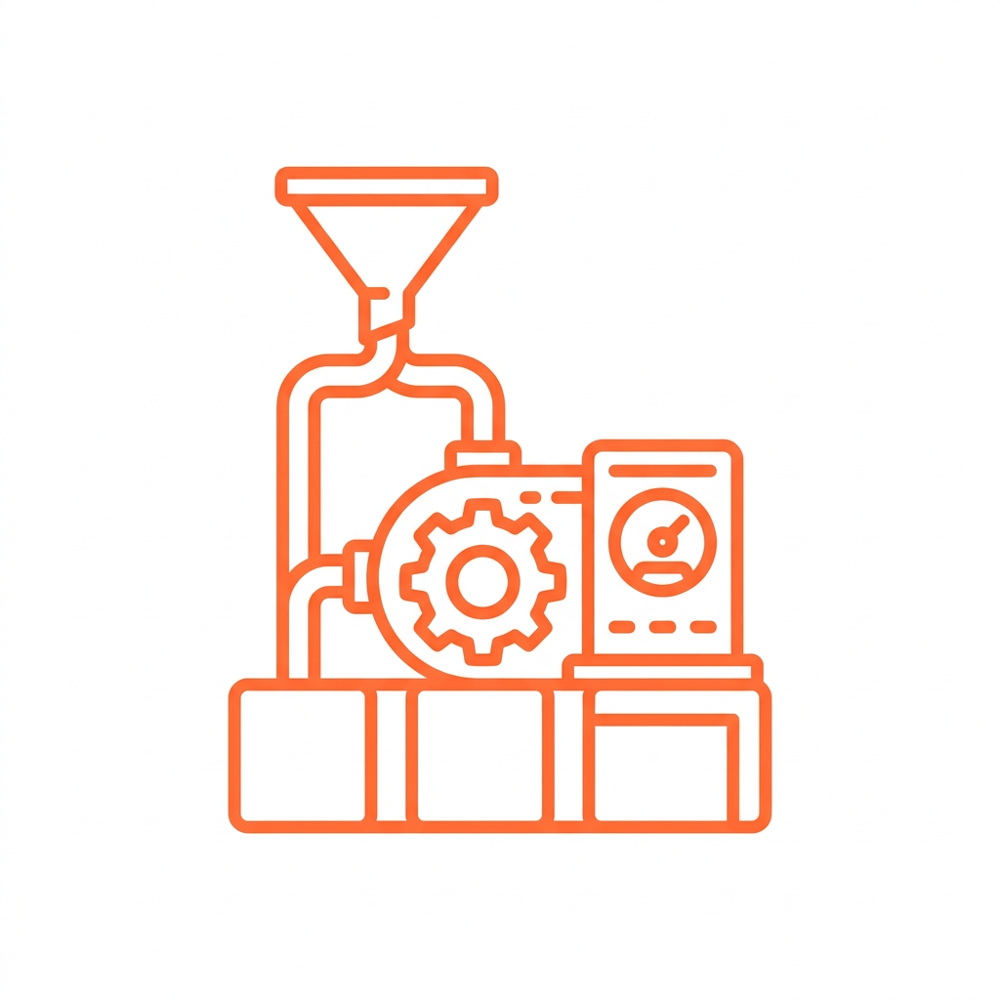
30台
生産設備